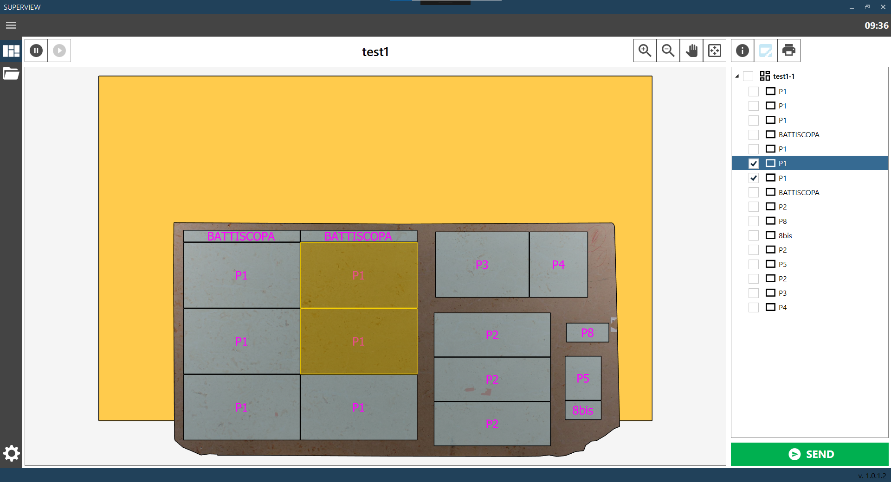
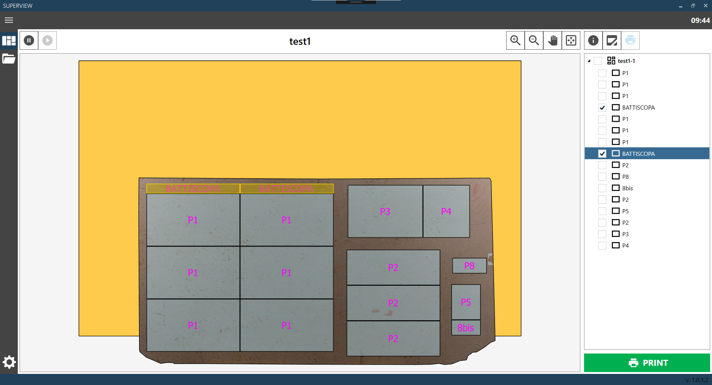
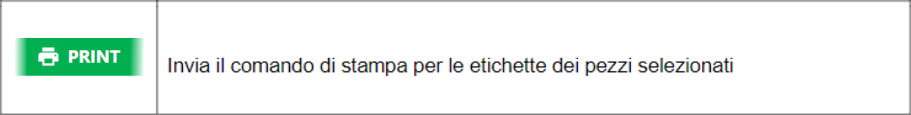
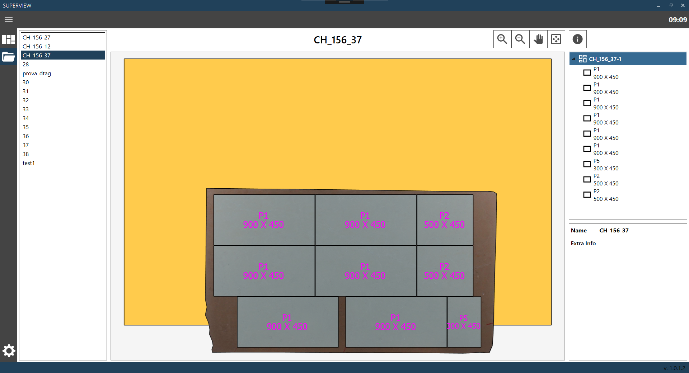

ITI-T Superview 1.0.1.0

Manuale software Superview
Una pubblicazione di Donatoni Macchine S.r.l.
Versione Software: 1.0.1.0
Versione Manuale: 1.0
Data: 02/02/2026
1 CONFIGURAZIONE CORRENTE
INFORMAZIONI

Pagina che permette di visualizzare la configurazione di taglio attualmente presente nella zona di scarico.
E’ presente una finestra di visualizzazione dove è possibile visualizzare il banco con sopra le lastre eseguite con i relativi pezzi. A destra è presente la lista di lastre e pezzi visualizzati, e sotto un pannello con le informazioni dell’oggetto selezionato. E’ possibile selezionare una lastra o un pezzo facendo click direttamente sull’oggetto desiderato nella finestra di visualizzazione, oppure sul nome dell’oggetto nella lista a destra.


2 SEGNALAZIONE PEZZI ROTTI
SEGNALAZIONE PEZZI ROTTI

3 STAMPA ETICHETTE
STAMPA ETICHETTE


4 APRI CONFIGURAZIONE
APRI CONFIGURAZIONE

Questa pagina consente di visualizzare la lista di configurazioni di taglio precedenti e riaprirle.
Per selezionare una configurazione di taglio precedente basta selezionarla dalla lista di sinistra.